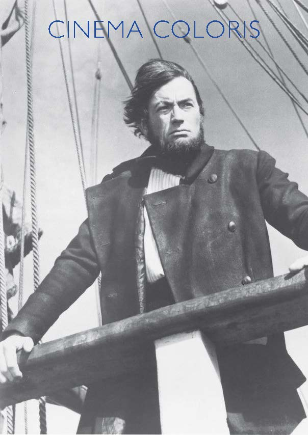

Es perfectamente lícito darle la vuelta a una obra literaria y reinterpretarla a la hora de llevarla a la gran pantalla, pues son lenguajes narrativos distintos al fin y al cabo. No obstante, para ello no debe usarse como pretexto la originalidad, la visión autoral u otras cuestiones. Buscar la fidelidad con la obra original no está reñido con la impresión de una visión autoral. El director John Huston, de incansable espíritu aventurero, con esta película, Moby Dick (1956), consiguió salir victorioso de tal afrenta al adaptar la obra que Herman Melville publicó en 1851, pues ya lo había hecho antes con El tesoro de sierra madre (The treasure of the Sierra Madre, 1948) y lo volvería a hacer con El hombre que pudo reinar (The man who would be king, 1975), ambas adaptaciones de libros de aventuras con trágico final marcado por la codicia y la ambición desmedida.
El tema que está presente a lo largo de todo el relato es el destino. La película empieza con el protagonista siguiendo el cauce de un río desde su nacimiento entre los montes con la esperanza de llegar hasta el mar. La última imagen es la del ataúd que le sirvió como salvavidas, flotando a la deriva. La unión de estas imágenes recuerda inequívocamente al poema de Jorge Manrique (Coplas por la muerte de su padre, 1476). Otro momento clave se da en la secuencia de la iglesia. Antes de que aparezca el reverendo, mientras los feligreses cantan se muestra toda la estancia mediante un travelling que exhibe toda las lápidas en recuerdo de todos aquellos que perdieron la vida en el mar. A su vez, mediante este recorrido se presenta a los marineros, anticipando así su destino, y a mujeres viudas enlutadas, revelando así el destino de las esposas de los marineros. Cuando el travelling finaliza su recorrido, la cámara panea hacia la derecha para mostrar la aparición del reverendo (Orson Welles). Después, mediante un plano general en la parte superior izquierda del plano está el reverendo (ataviado con ropa de marinero) predicando su sermón, que versa sobre Jonás y la ballena, sobre un púlpito que es la proa de un barco. En la parte inferior derecha del cuadro se ubican los feligreses, aplastados por el peso del plano, el cual los empuja hacia abajo (solo aparecen sus cabezas). Justo encima tienen todas las lápidas anteriormente mostradas, y por encima, el mástil de proa, formando una poderosa cruz que se cierne sobre ellos, dando fe por un lado de la omnipresencia de Dios tanto para castigar como para perdonar, y por otro lado, unido a las lápidas en honor a los caídos en alta mar, ambos elementos en sinergia avisan e infunden temor sobre el fatal destino. A su vez, el tema del destino se hace explícito con la breve y profética aparición de Elías.
El propio barco se muestra como un barco de Teseo en progreso, recompuesto con huesos de ballena, al igual que su capitán, obsesionado con su particular minotauro. Capitán y navío se muestran como una sola criatura. Los pasos que da sobre cubierta que retumban al ser percutidos con la prótesis de hueso de ballena, se sienten como un latido. Al mismo tiempo, estos “latidos” al escucharse a lo largo y ancho de la bodega, hacen ver a Ahab como un ser omnipresente.
En el plano previo a la aparición del capitán se muestra a los marineros arrodillados limpiando la cubierta. En contraposición, este aparece erguido sobre el castillo de popa. Toda su tripulación se encuentra ahora convertida en una masa homogénea frente a él. Se muestra un plano detalle de la pierna ortopédica, mostrándose como su apoyo físico y emocional, la causa de su dolor y la ambición por seguir viviendo, el dolor lo hace sentir vivo y su obsesión vengativa le da un sentido y un propósito a su vida. Clava una moneda en el mástil y en este momento se abandona a Dios (aunque Dios no los abandone), esta moneda se presenta como un ídolo, como un dios solar pagano (posteriormente, en otro momento del film, se reflejará el sol en ella de forma penetrante, además la moneda tiene grabada un sol). Tras esto, se inicia un ritual que podría asemejarse a una comunión donde toman ron, y esta ceremonia concluye con el capitán tomando con su mano tres arpones cruzados que empuñan sus oficiales, erigiéndose como una suerte de Neptuno con su tridente (esta idea se retomará cuando durante una tempestad apaga el fuego de San Telmo de un arpón con sus propias manos).
La relación del Capitán Ahab con Starbuck es la personificación de la lucha de la cordura intentando contener a la locura. La secuencia clave para ver esto es cuando Starbuck entra en el camarote del capitán. Abre la puerta, está el capitán dormido sentado frente a su mesa llena de mapas, a la izquierda del cuadro hay una lámpara que está colgada y se mueve por el bamboleo del mar, este movimiento se emplea para enfatizar la locura e inestabilidad del personaje. A su vez, al fondo, las líneas verticales que forman la pared de madera se muestran torcidas respecto al cuadro, remarcando la inestabilidad. Starbuck se acerca a despertarlo, se pasa a un plano más cerrado, la lámpara ha desaparecido y las líneas se ven más alineadas. Tras despertarse el capitán, la conversación se desarrolla con planos compartidos de ambos, en primer término abajo a la derecha está Ahab, de perfil, arriba a la derecha más pequeño y de frente está Starbuck. A medida que este último va cogiendo confianza, se va acercando y por consecuencia aumentando su tamaño, la cámara se desplaza para mostrarlos a ambos en un primer plano compartido, se va acercando progresivamente al ver al capitán en sus cabales, hasta el punto de mostrarse más grande que él. De repente, al capitán lo delata su obsesión, su segundo retrocede, se empequeñece, posteriormente se hace a un lado y sale del cuadro. El espectador está presenciando un pulso entre dos fuerzas, donde el tamaño de uno respecto a otro muestra dominancia o inferioridad. Ya separados y cada uno con su respectivo plano, Starbuck se encuadra frente al umbral de la puerta, donde las líneas verticales de la misma ayudan a transmitir seriedad y cordura. A su vez, Ahab vuelve con la lámpara y las líneas torcidas. Los planos se cierran hasta convertirse en primeros planos. Por una parte, el de Starbuck transmite una serena rectitud. Por otra parte, el capitán se levanta, mostrándose sombrío al desaparecer la luz de la lámpara, aunque no desaparezca su bamboleo, solo la luz. El plano se va cerrando progresivamente para mostrar cómo es ahogado y atrapado por su obsesión, mientras tuerce su rostro, mostrando desequilibrio y sumergiendo la mitad de su cara en la sombra. Starbuck abandona la estancia, aunque muy a su pesar su destino sigue ligado al de su capitán, siendo ambos parte de un mismo conjunto. A lo largo del film se reincide constantemente en esta idea, este pulso, mediante el uso del plano compartido.
En las dos secuencias previamente analizadas (la presentación de Ahab y la conversación en el camarote), el plano que sigue a ambas es calcado uno de otro. En ambos se muestran las velas con viento de popa haciendo avanzar el barco a gran ritmo. Tras un movimiento de cámara se pasa a enmarcar al mascarón de popa, la figura de un nativo americano. Esta figura representa lo místico, lo desconocido, lo anticristiano en definitiva. Avanzar en esa dirección supone abandonar sus creencias y enfrentarse a Dios ignorando la furia de este. De esta forma se acentúan las decisiones tomadas en las secuencias que las preceden, haciendo ver así su peso en la trama, en ambas se dan pasos en firme hacia la locura. La segunda vez que aparece esta transición se añade otro plano donde se muestra la cruz que se forma con el mástil de proa, aludiendo al plano de la iglesia, y mostrando que avanzan hacia su muerte. Todo esto reincide de nuevo en el tema principal, el destino, del cual nadie puede escapar, sobre todo cuando el único motor vital es la obsesión por una venganza improductiva.